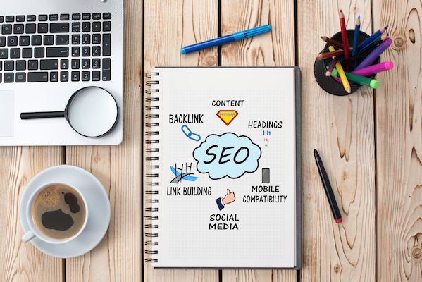

Search Engine Optimization
The dominance of mobile internet use means that users are searching for the right
business as they travel, shop, or sit on their couch at home. Search Engine
Optimization (SEO) allows you to increase your visibility
and find the right customers for your business.
Online Reputation Management
The web is full of opinions, and some of these can be negative.
Social media allows anyone with an internet connection to say whatever they want
about your business. Online Reputation Management gives you the control over what
potential customers see when they search for your business.

Social Media Marketing
Social media continues to have a sizable influence on buying habits. Social media
marketing helps you determine which platforms are suited to your brand,
using analytics to find the right markets and increase your lead generation.